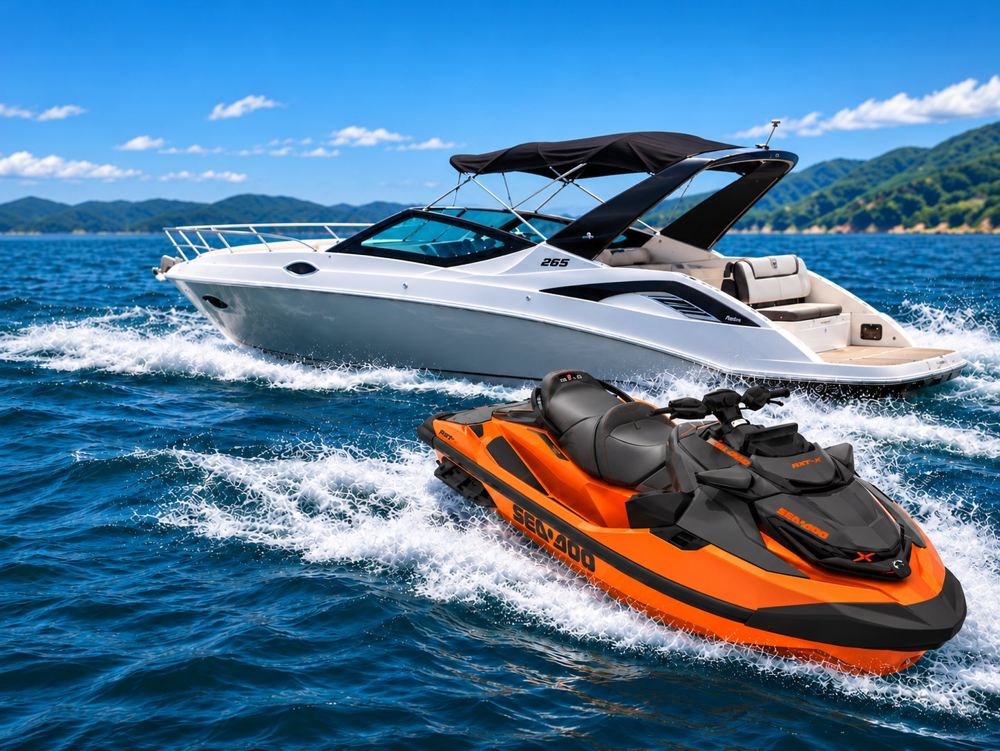
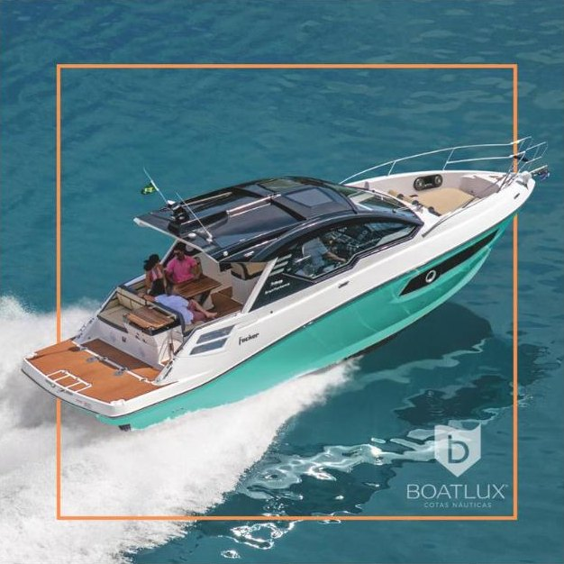
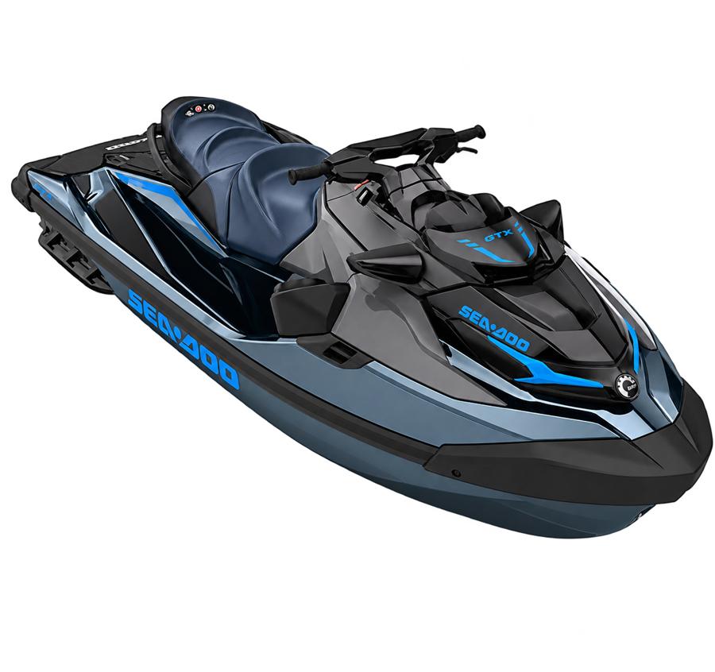
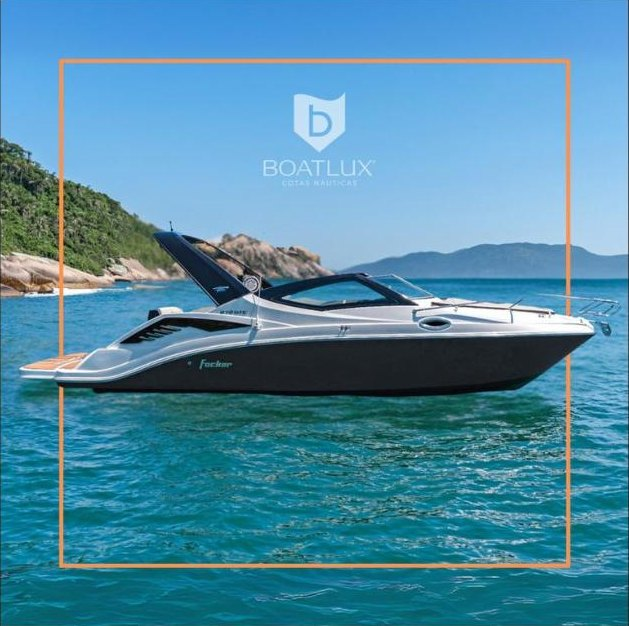
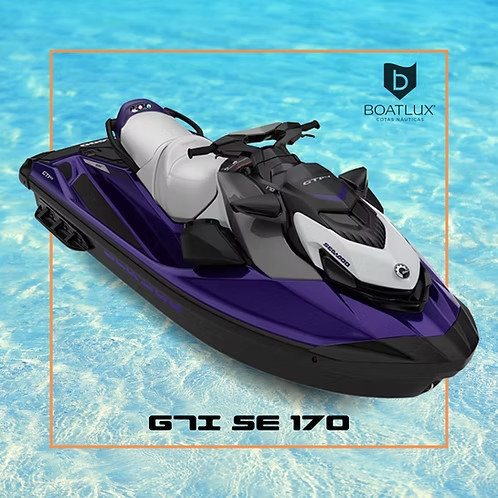
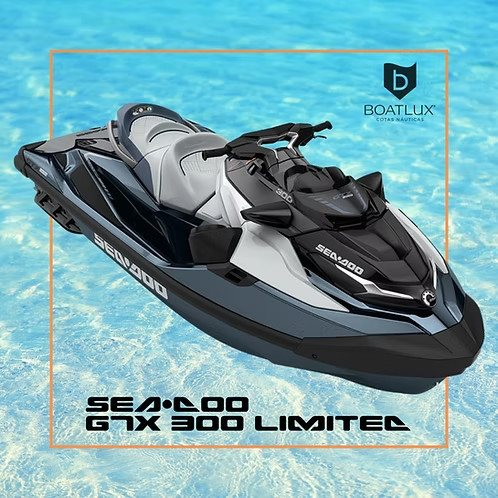
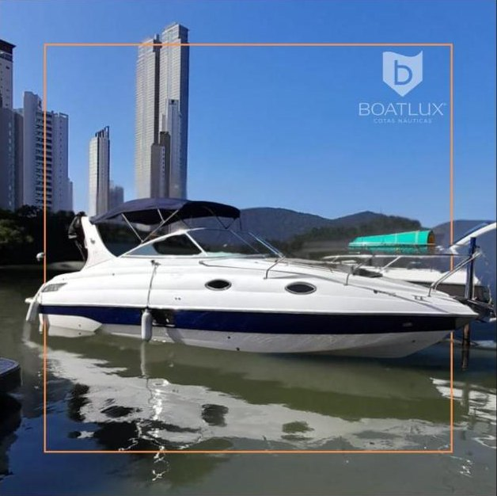
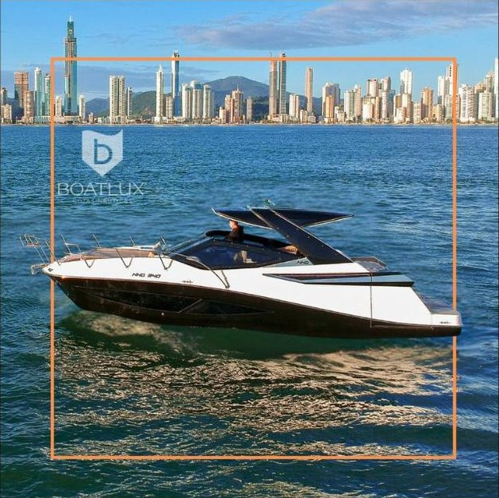
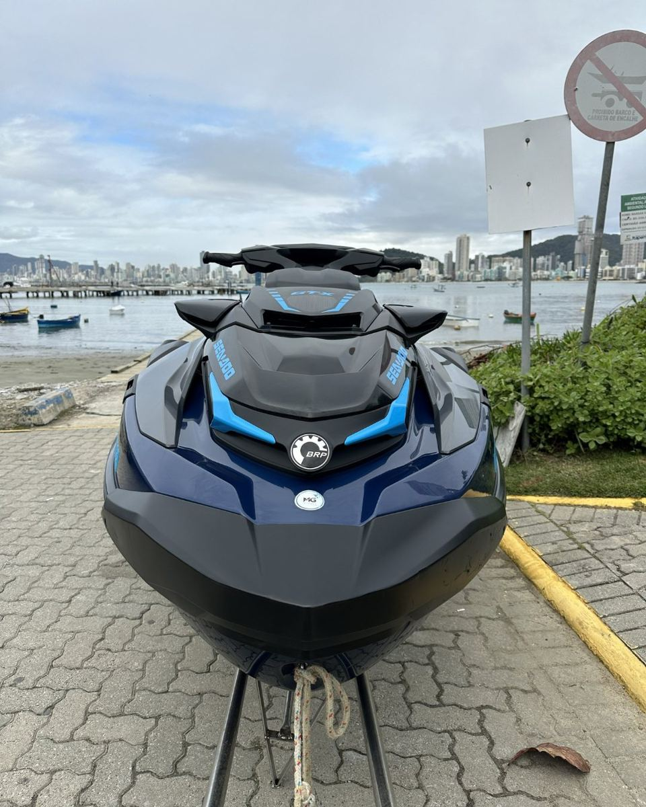
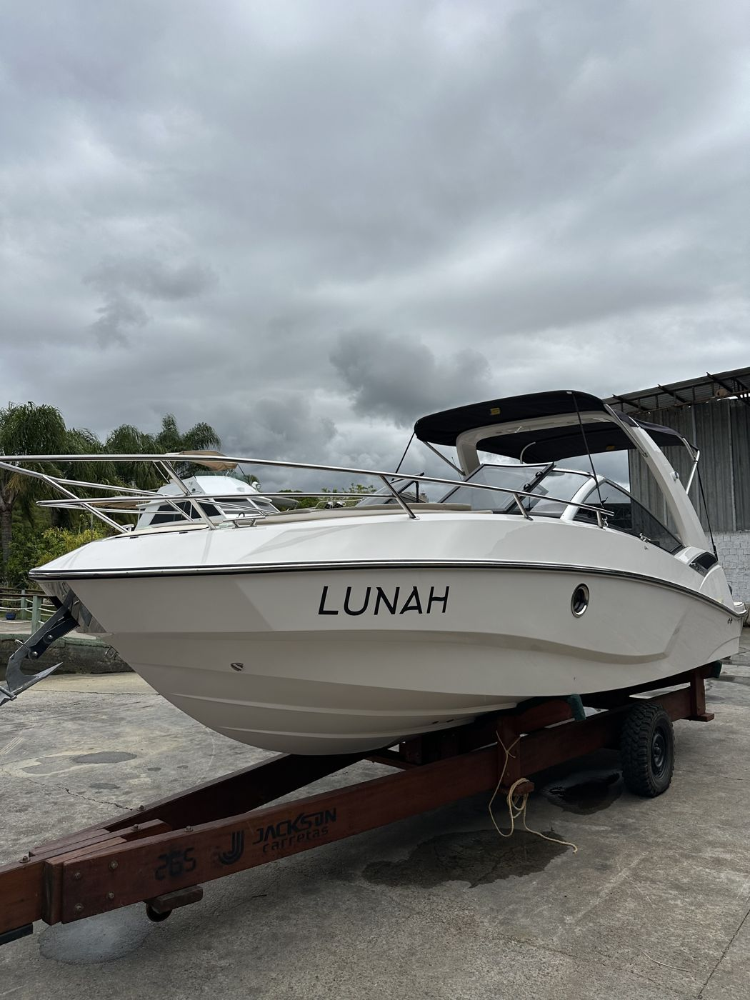

Pré-venda de cotas 2027: por que entrar agora e o que está disponível em BC, Itapema e Piçarras
Jets e lanchas zero em pré-venda em três cidades do litoral catarinense. Veja o que está aberto, quanto custa cada cota e, se preferir navegar já ou ser o único dono, as outras opções.
Por Marcelo, da Marcelo Jet · Leitura de 6 minutos

O que é a pré-venda de cotas
Na pré-venda, o grupo de cotistas de uma embarcação zero está sendo formado. Você garante a sua cota antes de o grupo fechar e entra desde o começo, com a embarcação nova, na marina que você escolheu.
Cada embarcação tem um número limitado de cotas. Nos jets são 6 cotistas (o RXT-X 350 também tem opção com 4). Quando as cotas acabam, o grupo fecha e a próxima chance é esperar uma cota de oportunidade.
Entenda como funciona a cota, o custo fixo e as reservas
Por que entrar agora
- Você escolhe. Escolhe o modelo, a cidade e a marina enquanto ainda há cotas.
- Embarcação zero. Você começa com um jet ou uma lancha nova, sem histórico de uso.
- Grupo formado desde o início. Você entra junto com os outros cotistas e já organiza as primeiras reservas pelo app.
- Investimento menor. Você paga só a sua parte da embarcação e divide o custo fixo com os outros cotistas.
Quero saber das cotas em pré-venda
Pré-venda em Balneário Camboriú
Em BC estão a maior lancha e a linha completa de jets 2027. A Focker 388 Gran Turismo fica na Marina VIP, e os jets na Marina JetHouse.

Lancha · Marina VIPFocker 388 Gran TurismoCota: R$ 449.900Ver a lancha →
Jet · Marina JetHouseSea-Doo GTX 170 2027Cota: R$ 34.900Ver o jet → Jet · Marina JetHouseSea-Doo Wake 170 2027Cota: R$ 29.900Ver o jet →
Jet · Marina JetHouseSea-Doo Wake 170 2027Cota: R$ 29.900Ver o jet →
 Jet · Marina JetHouseSea-Doo RXT-X 350 2027Cota: R$ 43.900 (6 cotistas) ou R$ 64.900 (4)Ver o jet →
Jet · Marina JetHouseSea-Doo RXT-X 350 2027Cota: R$ 43.900 (6 cotistas) ou R$ 64.900 (4)Ver o jet →
O Wake 170 é o jet para a família: puxa esqui, wakeboard e boia. O GTX 170 é o mais confortável para passar o dia no mar. E o RXT-X 350, com 350 hp, é o mais potente da Sea-Doo.
Pré-venda em Balneário Piçarras
Em Piçarras são duas lanchas zero na Marina Pier Jet e o GTX 170 na Marina One Jet.
 Lancha · Já na Marina Pier JetFS 265 ElementCota: R$ 119.900Ver a lancha →
Lancha · Já na Marina Pier JetFS 265 ElementCota: R$ 119.900Ver a lancha →

Lancha · Marina Pier JetFocker 272 GTCCota: R$ 139.900Ver a lancha → Jet · Marina One JetSea-Doo GTX 170 2027Cota: R$ 32.900Ver o jet →A FS 265 Element é cabinada, com cama de casal, banheiro fechado e churrasqueira embutida, e já está na marina esperando o grupo. A Focker 272 GTC tem churrasqueira, mesa no cockpit e som Boss. Nas duas, o marinheiro está incluso.
A vantagem de ser cotista da FS 265 Element
Uma lancha como a FS 265 Element zero vale cerca de R$ 700 mil. Como cotista, você paga R$ 119.900 pela sua cota e tem a mesma lancha para usar com a sua família, com marinheiro incluso e reservas pelo app. São R$ 580.100 que continuam no seu bolso.
FS 265 Element
- Você investe
- R$ 700.000
- Custos da lancha
- Só seus
- Dinheiro aplicado
- R$ 0
FS 265 Element
- Você investe
- R$ 119.900
- Custos da lancha
- Divididos entre os cotistas
- Dinheiro aplicado
- R$ 580.100
- Rende por mês*
- cerca de R$ 4.060
*Simulação com rendimento de 0,7% ao mês sobre o valor que ficou aplicado. É só um exemplo: faça a conta com a taxa do seu investimento.
Ou seja: o dinheiro que fica aplicado pode render todo mês um valor que ajuda a pagar a sua parte dos custos da lancha. E você ainda pode visitar a FS 265 na marina antes de fechar.
Pré-venda em Itapema
Em Itapema, o GTX 170 2027 zero fica na Marina Top Jet.
Jet ou lancha: qual combina com você?
Adrenalina e praticidade
Até 3 pessoas por jet. Ideal para quem quer sair rápido, curtir o mar e voltar. Cota a partir de R$ 29.900, com custo fixo entre R$ 343 e R$ 440 por mês, conforme a marina.
Dia no mar com a família
De 10 a 15 pessoas, com marinheiro incluso, churrasqueira e cabine. Ideal para reunir família e amigos. Cota a partir de R$ 119.900.
Quer navegar já nesta temporada? Cotas de oportunidade
A pré-venda é para quem quer entrar com a embarcação zero. Se você quer navegar já, as cotas de oportunidade são o caminho. São cotas de quem está fazendo upgrade para uma embarcação maior ou zero, então o jet ou a lancha já está na água, com o grupo formado.
Hoje são 7 jets de oportunidade, em Balneário Camboriú e Itapema, com cotas de R$ 19.900 a R$ 29.900. E 6 lanchas de oportunidade em Balneário Camboriú, de 28 a 37 pés, com cotas de R$ 49.900 a R$ 279.900.

Jet · Itapema · Marina Top JetGTI SE 170 2025Cota: R$ 19.900Ver o jet →
Jet · BC · Marina JetHouseGTX 300 Limited 2024Cota: R$ 29.900Ver o jet →
Lancha · BC · Marina OceanoTriton 300 Classic 2015Cota: R$ 49.900Ver a lancha →
Lancha · BC · Marina OceanoNHD 340 Open Deck Duplo 2021Cota: R$ 189.900Ver a lancha →Ver todas as cotas de oportunidade
Prefere ser o único dono? Jets e lancha à venda
Se você quer ter o jet ou a lancha só para você, também tenho embarcações seminovas à venda, todas com procedência comprovada. Os jets têm laudo cautelar aprovado.

Jet seminovo · Laudo cautelarSea-Doo GTX 170 2025R$ 116.000Ver os jets à venda →
Lancha seminova · Visão 360°FS 265 Element 2025R$ 449.900Ver a lancha →Hoje são 3 jets à venda, de R$ 84.000 a R$ 116.000: GTX 170 2025, GTI SE 170 2025 e GTI 130 2024. A FS 265 Element 2025 está com apenas 23 horas de uso, e dá para ver a lancha por todos os ângulos na página dela. E a FS 290 Concept 2025, com motor Mercury 350 hp e 54 horas, em estado de novo, sai por R$ 650.000 e aceita veículo na troca.
Qual caminho é o seu?
Para resumir, veja os três caminhos lado a lado:
| Caminho | Embarcação | Jet a partir de | Lancha a partir de |
|---|---|---|---|
| Cota em pré-vendaPara entrar no grupo desde o começo | Zero | R$ 29.900 | R$ 119.900 |
| Cota de oportunidadePara navegar já nesta temporada | Já está na água | R$ 19.900 | R$ 49.900 |
| Comprar inteiroPara ser o único dono | Seminova | R$ 84.000 | R$ 449.900 |
Valores de hoje. As cotas em pré-venda e de oportunidade saem rápido, então me chama para confirmar a disponibilidade.
Perguntas rápidas
Quando a embarcação da pré-venda chega?
Cada embarcação tem a sua previsão. Me chama no WhatsApp que eu te passo a data de cada uma.
Posso escolher a marina?
Sim. Cada embarcação fica numa marina: em BC, Marina VIP (lancha) e Marina JetHouse (jets); em Piçarras, Marina Pier Jet (lanchas) e Marina One Jet (jet); em Itapema, Marina Top Jet.
Qual a diferença entre pré-venda e cota de oportunidade?
Na pré-venda a embarcação é zero e o grupo está sendo formado. Na cota de oportunidade a embarcação já está na água e você entra no lugar de um cotista que está fazendo upgrade.
Dá para parcelar?
Sim. Me chama no WhatsApp que eu te passo as condições de cada embarcação.
Garanta a sua cota antes de o grupo fechar
Me chama no WhatsApp e me diz a cidade e se prefere jet ou lancha. Eu te mostro as cotas disponíveis hoje.
Falar com o Marcelo